سادهترین معیار، Accuracy (درصد پیشبینیهای درست) است. اما همانطور که در این بخش میبینیم،
بهتنهایی میتواند بهشدت گمراهکننده باشد.
برای اینکه این مفاهیم واقعاً جا بیفتند، در تمام این بخش از یک صحنهی واحد و واقعی استفاده میکنیم:
۳۶ نمونهی واقعی از دیتاست Breast Cancer و مدلی که رویشان آموزش دیده.
صحنهی اصلی این بخش
با ۳۶ نمونهی واقعی شروع میکنیم
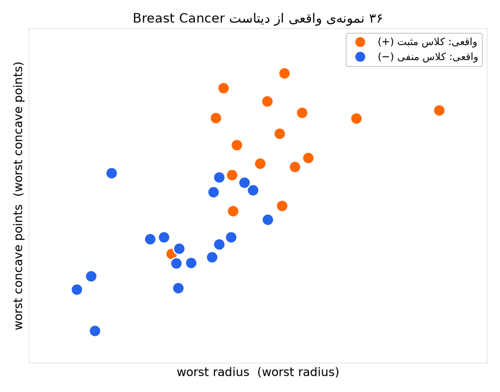
هر نقطه یک نمونهی واقعی است؛ رنگ = برچسب واقعی (نارنجی = کلاس مثبت، آبی = کلاس منفی). محورها دو ویژگی واقعی از دیتاستاند.
«مثبت» و «منفی» فقط دو اسم قراردادیاند برای دو کلاس؛ هیچ ربطی به خوب یا بد بودن ندارند.
مثال - در این دیتاست خاص: مثبت = بدخیم (malignant)، منفی = خوشخیم (benign).
اما همین دقیقاً همین چارچوب برای هر مسئلهی دودویی دیگری هم کار میکند: اسپم/غیراسپم، تقلب/تراکنش عادی، قطعهی معیوب/سالم.
حالا یک مدل آموزش میدهیم
پسزمینه رنگی = پیشبینی مدل
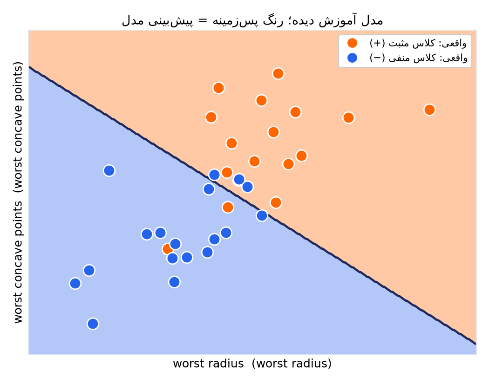
همین حالا، بدون هیچ فرمولی، میتوانید با چشم ببینید مدل کجاها اشتباه کرده: هر نقطهای که رنگش با رنگ پسزمینهی زیرش فرق دارد.
این دو نوع اشتباه معمولاً هزینهی یکسانی ندارند - دقیقاً همین تفاوت هزینه، دلیل وجود Precision و Recall بهجای فقط Accuracy است.
مثال - تشخیص بیماری: FN (از دستدادن یک بیمار واقعاً بدخیم) معمولاً خیلی خطرناکتر از FP (یک هشدار اضافی) است.
در فیلتر اسپم، معمولاً برعکس است: FP (اسپمزدن به یک ایمیل مهم) گرانتر از FN است.
معیار اول
Accuracy: دقت کلی
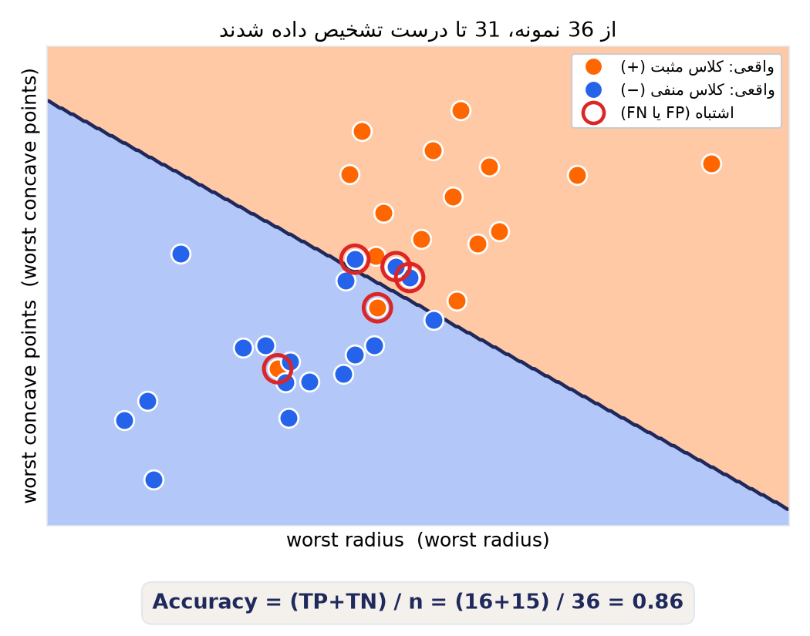
Accuracy = (TP + TN) / n
نسبت کل پیشبینیهای درست به کل نمونهها. ساده و شهودی - همان تعداد نقاطی که حلقهی قرمز ندارند، تقسیم بر کل نقاط.
معیار دوم
Precision: فقط ناحیهی «پیشبینی مثبت» را نگاه کنید
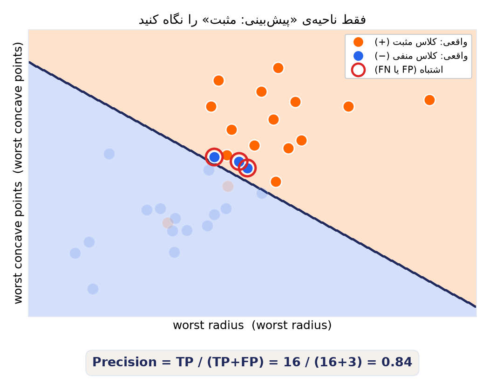
از میان همهی مواردی که مدل «مثبت» اعلام کرد، چند درصد واقعاً مثبت بودند؟
«وقتی مدل زنگ خطر میزند، چقدر میتوانم به آن اعتماد کنم؟»
مثال - فیلتر اسپم: از میان همهی ایمیلهایی که مدل «اسپم» علامت زد، چند درصد واقعاً اسپم بودند؟
Precision پایین یعنی ایمیلهای مهم هم زیاد اشتباهی اسپم میخورند.
معیار سوم
Recall: فقط نمونههای واقعاً مثبت را نگاه کنید
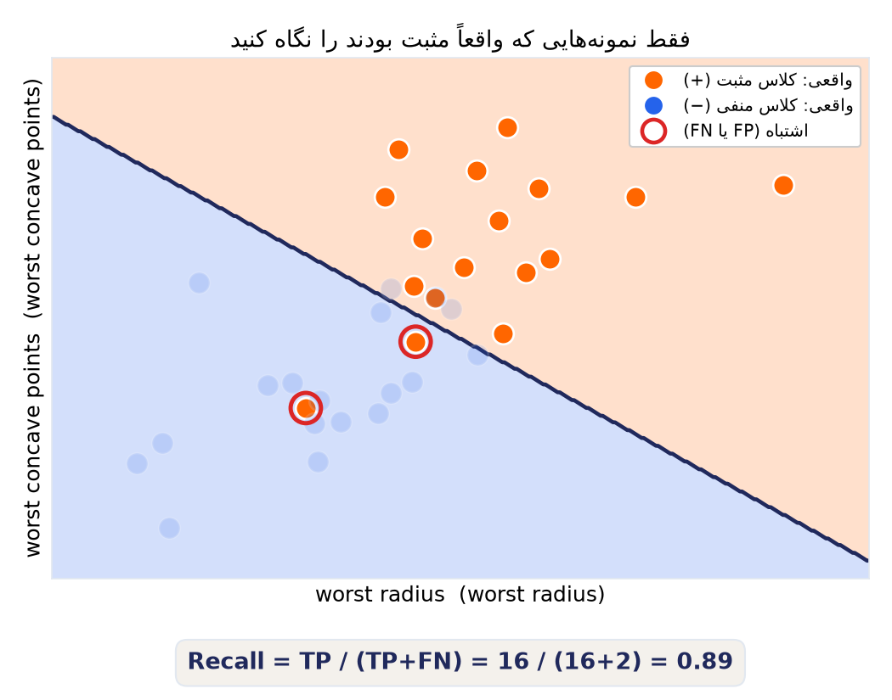
از میان همهی مواردی که واقعاً مثبت بودند، چند درصد را مدل پیدا کرد؟
«از بین همهی موارد واقعی، چند تا از دست نرفتند؟»
مثال - تشخیص بیماری: از میان همهی بیمارانی که واقعاً بدخیم بودند، چند درصد را مدل پیدا کرد؟
Recall پایین یعنی چند بیمار واقعی از دست رفتهاند.
تفاوت کلیدی
این دو معیار، دو زیرمجموعهی متفاوت از همین صحنه را میبینند
Precision فقط سراغ نقاطی میرود که مدل «مثبت» گفته (یک طرف مرز تصمیم).
Recall فقط سراغ نقاطی میرود که واقعاً مثبتاند (یک رنگ خاص، فارغ از مرز).
همین تفاوت زاویهی دید، باعث میشود این دو عدد تقریباً همیشه با هم فرق داشته باشند.
مدلی که همیشه «مثبت» میگوید، Recall کامل دارد اما Precision افتضاح؛ مدل خیلی محتاط برعکس.
F1 هر دو افراط را جریمه میکند و فقط به مدل متعادل ما نمرهی بالا میدهد.
مقایسه - با چند مثال از حوزههای مختلف
Precision در برابر Recall
Precision بالا مهمتر است
Recall بالا مهمتر است
هزینهی گرانتر
هشدار غلط (FP)
از قلم افتادن مورد واقعی (FN)
مثال ۱
فیلتر اسپم - ایمیل مهم را اسپم نزنیم
تشخیص بیماری - بیمار واقعی را از دست ندهیم
مثال ۲
پیشنهاد محتوا - چیز نامرتبط پیشنهاد ندهیم
تشخیص تقلب بانکی - تراکنش متقلبانه را از دست ندهیم
مثال ۳
تعدیل محتوا - کاربر بیگناه را مسدود نکنیم
کنترل کیفیت کارخانه - قطعهی معیوب را رد نکنیم
مثال ۴
دستیار صوتی - با صدای اشتباه فعال نشود
تشخیص نفوذ سایبری - حملهی واقعی را از دست ندهیم
وقتی Accuracy دروغ میگوید
مثال: عدم توازن کلاسها (Class Imbalance)
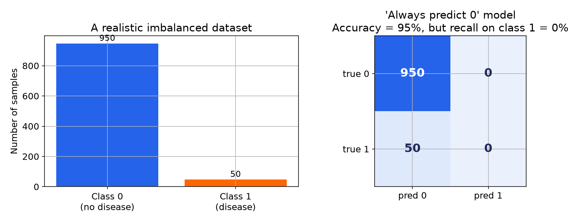
یک مدل «تنبل» که همیشه پیشبینی «سالم» میدهد، بدون یادگرفتن هیچ چیزی، به Accuracy = ۹۵٪ میرسد - اما Recall آن روی کلاس بیمار دقیقاً صفر است.
هر وقت کلاسها نامتوازناند (تقلب، بیماریهای نادر، خرابی ماشینآلات)،
حتماً Precision، Recall و F1 را هم کنار Accuracy نگاه کنید.
فراتر از یک آستانهی ثابت
همان صحنه، سه آستانهی متفاوت
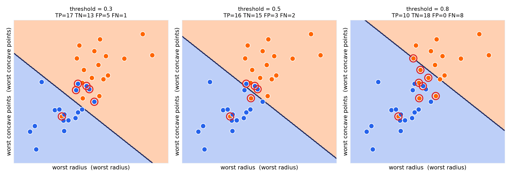
با جابهجایی آستانه، مرز حرکت میکند و چهار عدد TP/TN/FP/FN عوض میشوند - دقیقاً همان چیزی که Precision و Recall را در بخش بعد به «تبادل» میرساند.
فراتر از سه آستانهی دستی
تبادل Precision و Recall
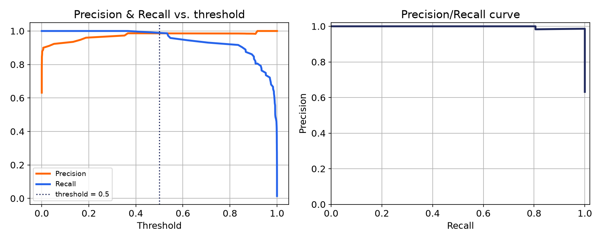
همان اتفاقِ اسلاید قبل، اینبار روی مدل کامل و برای همهی آستانههای ممکن، نه فقط سهتا:
با بالا رفتن آستانه، Precision بالا میرود، Recall پایین میآید.
فقط شهود
ROC Curve: عملکرد در همهی آستانهها
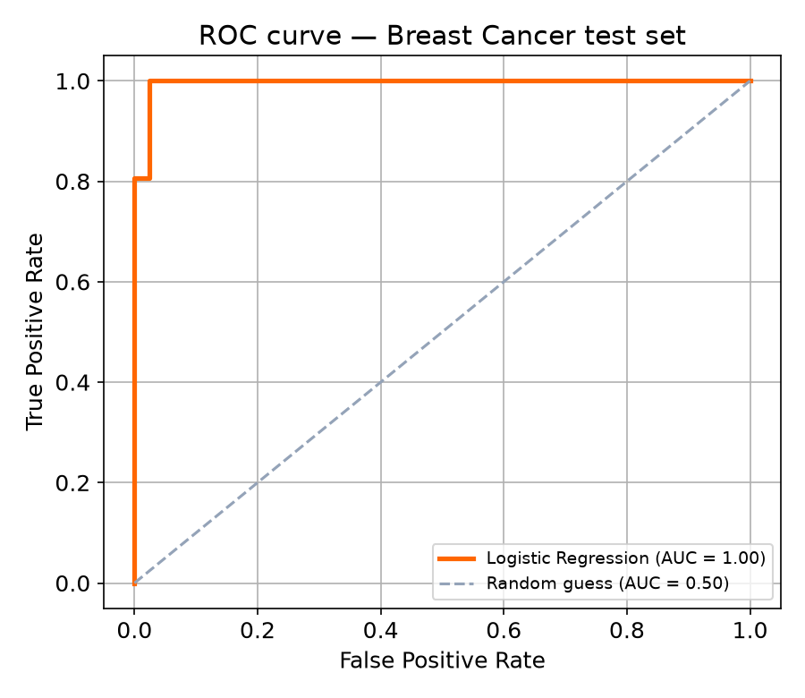
هر نقطه روی منحنی، مربوط به یک آستانهی متفاوت است
خط قطری = حدس تصادفی؛ هرچه منحنی از آن دورتر و به گوشهی بالا-چپ نزدیکتر، بهتر
یک شهود دیگر برای AUC
همهی نمونهها، مرتبشده بر اساس احتمال پیشبینی مدل
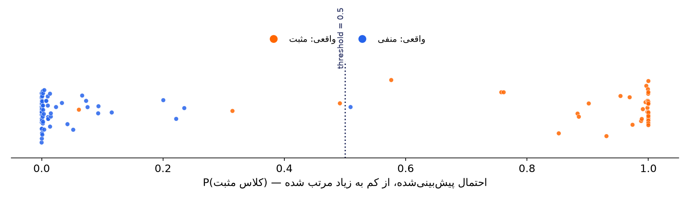
مدل خوب، نارنجیها (کلاس مثبت) را در سمت راست و آبیها (کلاس منفی) را در سمت چپ جمع میکند.
AUC یعنی: اگر یک نمونهی مثبت و یک نمونهی منفی را تصادفی انتخاب کنیم، چقدر احتمال دارد مدل امتیاز بالاتری به نمونهی مثبت داده باشد؟
مثال - اینجا مثبت = بدخیم، منفی = خوشخیم؛ اکثر نارنجیها درست سمت راستاند و اکثر آبیها سمت چپ، جز چند نمونهی مرزی نزدیک آستانه.
خلاصهی یک عدد
AUC: مساحت زیر منحنی
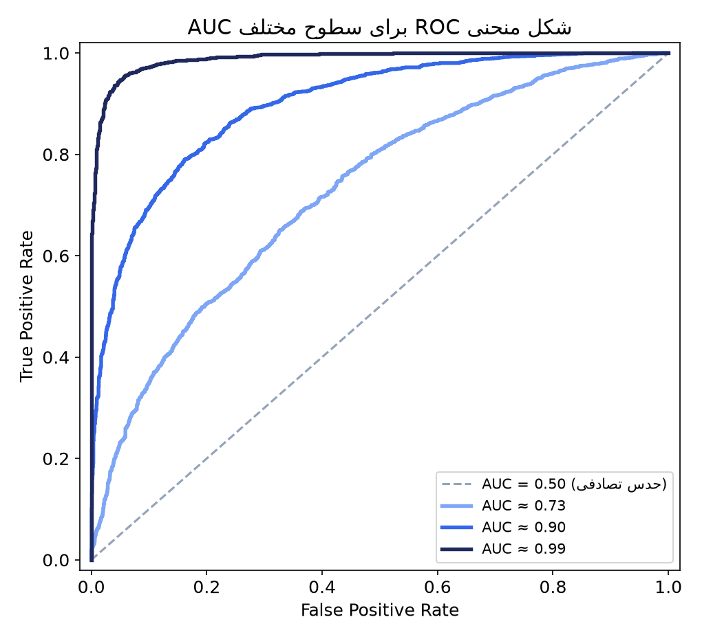
AUC = 0.5 → منحنی دقیقاً روی خط قطری؛ مدل هیچ بهتر از حدس تصادفی نیست
هرچه منحنی به گوشهی بالا-چپ نزدیکتر شود، AUC بزرگتر است
AUC = 1.0 → جداسازی کامل بین دو کلاس
کاربرد اصلی: مقایسهی رتبهای مدلها بدون قفلشدن به یک آستانهی خاص
تا اینجا فقط دو کلاس
همهی اینها را با «مثبت» و «منفی» یاد گرفتیم - یعنی دقیقاً دو کلاس.
اما خیلی از مسائل واقعی بیش از دو کلاس دارند: تشخیص نوع حیوان در یک عکس از روی ۱۰ گزینهی ممکن (سگ، گربه، پرنده، ...)، تشخیص نوع محصول، دستهبندی خبر.
همان ایده، جدول بزرگتر
ماتریس درهمریختگی برای ۱۰ کلاس
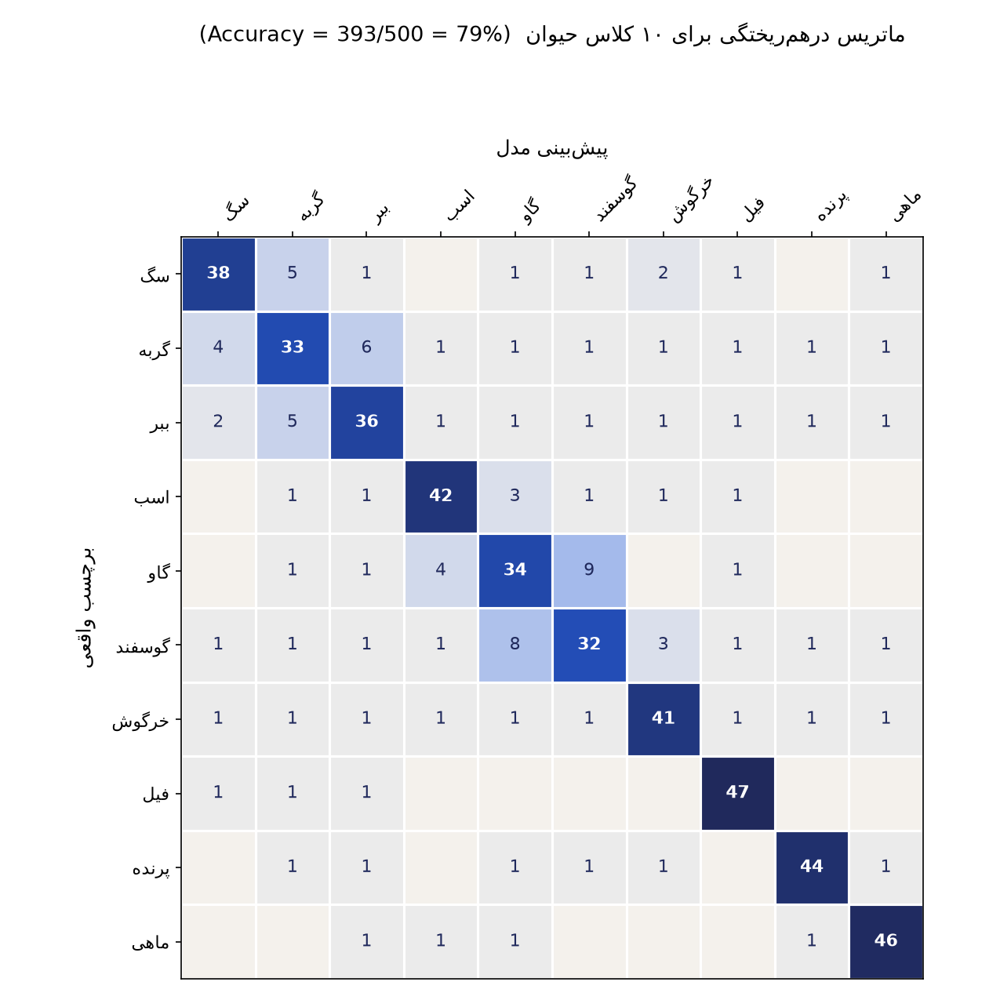
دقیقاً همان ایدهی جدول ۲×۲ قبلی، فقط اینبار ۱۰×۱۰: هر سطر یک کلاس واقعی، هر ستون یک کلاس پیشبینیشده.
قطر = پیشبینیهای درست؛ هر عدد خارج از قطر یعنی «این کلاس با آن یکی اشتباه گرفته شده».
نکته - اشتباهات تصادفی پخش نیستند: «گاو» و «گوسفند» بیشتر با هم قاطی میشوند تا با «ماهی»، چون از نظر ظاهری و ویژگیها به هم نزدیکترند.
TP · TN · FP · FN دیگر هم معنا دارند
برای هر کلاس، آن یکی را «مثبت» و بقیه را «منفی» در نظر بگیرید
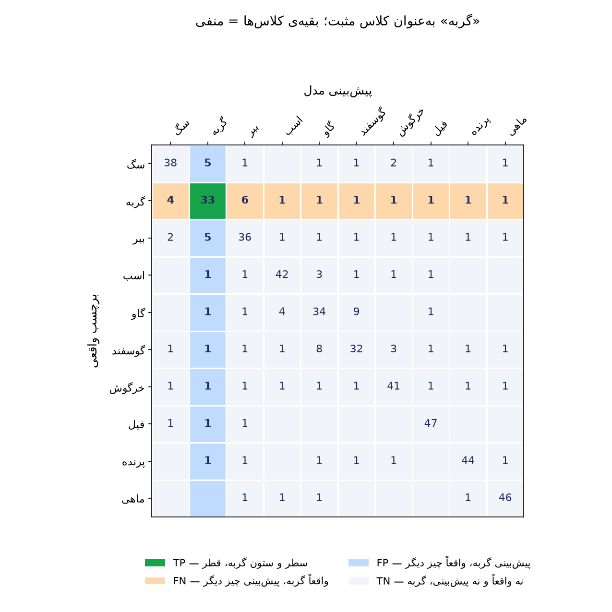
این روش را One-vs-Rest مینامند: برای محاسبهی Precision و Recall «گربه»، همان تعریفهای همیشگی را به کار میبریم - فقط اینبار «مثبت» یعنی «گربه» و «منفی» یعنی «هر چیز دیگری».
همین کار را برای هر ۱۰ کلاس، یکییکی، تکرار میکنیم.
یک عدد به ازای هر کلاس
دیگر یک Precision نداریم؛ ۱۰ تا داریم
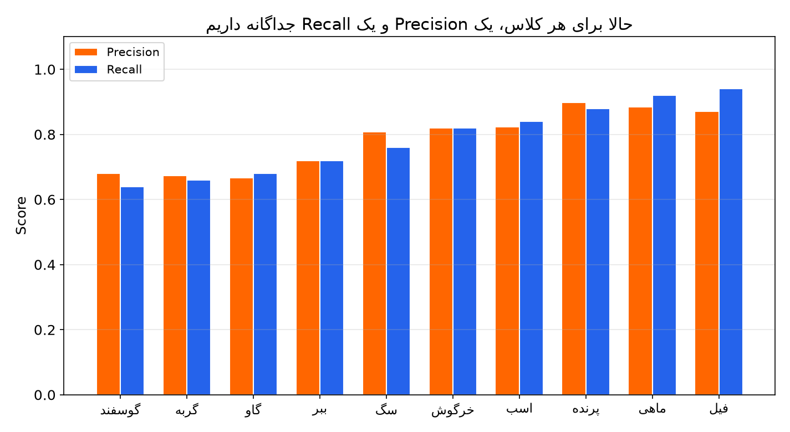
کلاسهایی مثل «فیل» و «ماهی» که ظاهر متمایزی دارند، هم Precision و هم Recall بالایی میگیرند؛
«گربه»، «گاو» و «گوسفند» که با کلاسهای مشابه قاطی میشوند، عدد پایینتری میگیرند.
و اگر فقط یک عدد بخواهیم؟
میانگینگیری بین کلاسها
Macro average
میانگین سادهی Precision (یا Recall) روی ۱۰ کلاس، بدون توجه به تعداد نمونهی هر کلاس.
هر کلاس، هرچقدر هم کوچک، وزن یکسان دارد.
Weighted average
همان میانگین، اما با وزن تعداد نمونهی هر کلاس؛ کلاسهای پرتعدادتر، اثر بیشتری روی عدد نهایی میگذارند.
اگر کلاسها نامتوازناند (بخش پیش)، Macro average معمولاً تصویر صادقتری میدهد - چون کلاسهای کوچک را در میانگین گم نمیکند.
پیام کلیدی
یک عدد واحد (Accuracy) هرگز کل داستان را نمیگوید.
همیشه Confusion Matrix را نگاه کنید،
بپرسید کدام خطا گرانتر است، و معیار را متناسب با آن انتخاب کنید.